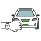
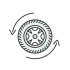
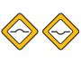

Hábitos de manejo

Tiempo de uso
{{ use_time_hrs | number : '1.2-2' }} {{ unit_use_time }}Aceleración
{{ dataDrivingHabits?.hard_acceleration | number : '1.2-2' }} km/hr
Frenado brusco
{{ dataDrivingHabits?.hard_brakes }}

Vuelta brusca
{{ dataDrivingHabits?.hard_turn }}

Número de
Topes/Baches/Bados
{{ dataDrivingHabits?.hard_turn }}Distancia manejada
{{ dataDrivingHabits?.distance | number : '1.2-2' }} kmVelocidad promedio
{{ dataDrivingHabits?.avg_drive_speed | number : '1.2-2' }} km/hr